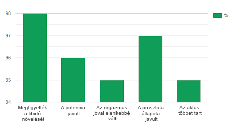

"Oknyomozó" műsorunk új kiadásában a stúdióban megvitattuk a férfiak egészségével foglalkozó izraeli szakértő — Yitzhak Geffen rejtélyes eltűnését. Kapcsolatban állt-e ez munkájával vagy más szerencsétlenség történt vele? Ezt próbálták tisztázni a műsor résztvevői.
Műsorvezető: Üdvözlöm a stúdió vendégeit és a nézőket! Ez az "Oknyomozó" legújabb kiadása. Lehet, hogy valaki önök közül már hallott az eléggé ismert férfi egészséggel foglalkozó szakember, Yitzhak Geffen eltűnéséről. Ma megpróbálunk rájönni, mi is történt vele.
Első kérdésem az izraeli rendőrség képviselőjéhez, David Levihez: Jó estét! Meséljen, kérem, bővebben Yitzhak Geffen eltűnéséről. Vannak gyanúsítottjai és verziói arra, mi történt?
D. Levi: Jó estét! Körülbelül egy hete anonim hívást kaptunk, hogy Tel-Aviv külterületén, az erdő mellett üres autó áll nyitott ajtóval a vezető ülés felől. A rendszám alapján sikerült kiderítenünk, hogy az autó Yitzhak Geffen tulajdona. Az eset helyszínén nem találtuk meg személyes holmijait. Mivel a városon kívül él, feltételezzük, hogy hazafelé tartott. A rendőrségnek van néhány változata arról, hogy mi történt aznap este, de a nyomozás érdekében, sajnos nem mondhatom el őket.
Műsorvezető: A médiában aktívan vitatják meg azt a változatot, hogy valószínűleg az új potencia szer miatt tüntették el, amelynek kidolgozását nemrég fejezte be. Mi tud mondani ezzel kapcsolatban?
D. Levi: Csak azt tudom mondani, hogy ezt a verziót mi sem zárjuk ki.
Műsorvezető: Köszönöm önnek, Levi úr! Van-e alapja ennek a verziónak? Ilyen különleges volt-e Geffen új szere? Erről mesél nekünk vendégünk, Ohad Osiri. Fogadják szeretettel! (a férfi belép a stúdióba a nézők tapsával kísérve)
— Üdvözlöm, Osiri úr! Ön Yitzhak Geffennel dolgozott legutóbbi találmányán, a potencia szeren, igaz?
Ohad Osiri szakértő —
a férfiak
urogenitális problémáira specializálódott, több mint 15 éve dolgozik Izraelben.
Több mint 1 évig dolgozott Yitzhak Geffennel az szer létrehozásán
O. Osiri: Igen, a kezdeti szakaszban. Megosztott velem egy ötletet, hogy természetes kivonatok alapján hozzunk létre egy szert a potenciára és a prosztatagyulladás ellen. És felajánlotta, hogy dolgozzunk rajta együtt. Yitzhak nagyon lelkes volt a szer miatt és meg volt róla győződve, hogy ez sok férfinak segíthet. Sajnos, kritikusan nem volt elegendő a finanszírozás, ezért el kellett hagynom a projektet. Egyedül folytatta a munkát a szeren.
Műsorvezető: Ön úgy gondolja, hogy ez a szer tényleg különleges volt?
O. Osiri: Ha ez nem így lett volna, nem egyeztem volna bele dolgozni rajta. Nem ismerek egyetlen más szert sem hasonló összetétellel. Ezért örülök, hogy mindentől eltekintve, Yitzhaknak sikerült életre hívnia eredeti ötletét és megalkotta az szert.
Hiszen ez azt jelenti, hogy a 60 évnél idősebb férfiaknak is lehetőségük van helyreállítani potenciájukat. Mivel ez a szer természetes, bármely életkorban szedhető. Ezenkívül az ideális azoknak a fiataloknak, akiknek problémáik vannak az ágyban pszichológiai okok, önbizalomhiány vagy tapasztalatlanság miatt. Az a szorongás és a stressz ellenére elősegíti az erős erekciót!
Válaszoljon 5 kérdésre és tudja meg, van-e oka az aggodalomra
1. Vizeletürítés közben érez fájdalmat és égető érzést?
2. Felkel-e éjszaka 1 alkalomnál gyakrabban vécére menni?
3. Érez szorongást és nyomottságot?
4. Észrevette a potencia csökkenését?
5. Hány éves?
Köszönjük válaszait! Sajnos, ön néhány lépésre van a végzetes következményektől. Annak érdekében, hogy továbbra is férfi maradhasson a szó egyenes értelmében, kezdje el a terápiát most azonnal!
megrendeléseMűsorvezető: Mitől jobb az az analógoknál?
O. Osiri: Sok szakértő egyáltalán nem javasolja a kék tabletták és más PDE-5 inhibitorok szedését. Először is, túl sok mellékhatásuk van,, másrészt, ha valami nem stimmel a szívvel, akkor legjobb esetben kórházba kerülhet, legrosszabb esetben pedig a másvilágra.
Minden ismert szernek mellékhatása van, és hosszan tartó használat esetén károsíthatja a szívet, a májat és más szerveket. A férfiak pedig annyira félnek az kudarcoktól az ágyban, hogy nélkülük egyszerűen már nem tudnak szexelni. Ilyen ördögi kör alakul ki.
A PDE5 inhibitorokkal ellentétben az összetettebb hatású. Először is, jótékony hatással van a potenciára. Másodsorban elősegíti a teljes urogenitális rendszer működésének javítását. Ezért azt mondhatjuk, hogy az segít növelni a libidót, serkenteni a tesztoszteron szintézisét és megakadályozni a prosztatagyulladást. Nehezebb esetekben ismételt kúrára lehet szükség.
Nagyon fontos különbség a többi szerrel szemben, hogy az nem addiktív és kedvezően hat a szervezetre, mivel természetes összetevőket tartalmaz.
Műsorvezető: Meséljen kicsit az összetételéről.
O. Osiri: Az összetevők gondosan kiegyensúlyozottak, komplex módon hatnak a probléma okára, ezáltal növelve a terápia hatékonyságát.
Itt van néhány az összetevők közül:
Műsorvezető: Vannak-e valamilyen számok, amelyek alátámasztják az hatékonyságát?
O. Osiri: Amennyire tudom, a terjesztő felmérést végzett több mint 200 vásárló között. Legtöbben közülük kiváló eredményeket kaptak. A felmérés megmutatta, hogy az tényleg működik, de a kék tablettáktól eltérően sokkal erősebb hatást segít elő, amely általában a kúra befelyezése után is tart.
Itt vannak a fő eredmények, amelyeket várni lehet a szertől:
Itt vannak még az eredmények számokban:

Műsorvezető: Tényleg kiváló mutatók! Mit gondol, mi történhetett Yitzhak Geffennel?
O. Osiri: Talán ennek oka a pénz lett. Mint már mondtam, nem volt elegendő pénzünk, talán kölcsönvette valahol, hogy kidolgozhassa az szert, de visszaadni már nem tudta. Feltételezem továbbá, hogy a versenytársak távolíthatták el, attól tartva, hogy a profit jelentős részét elveszítik.
De lehet, hogy Yitzhak egyszerűen úgy döntött, hogy visszavonul valahova és rendbe teszi a gondolatait. Gyakran tette ezt. Remélem a legjobbakat.
Műsorvezető: Van még egy vendégünk. Ő önkéntesen szedte az szert, amikor a szer még a kidolgozás szakaszában volt. Beleegyezett, hogy eljön hozzánk teljes anonimitás feltételével, ezért maszkban jön be hozzánk. Várjuk önt!(a férfi maszkban lép be tapssal kísérve)
— Jó napot! Köszönöm, hogy eljött. Mondja el, kérem, miért egyezett bele az szedésébe, amikor még nem volt ismeretes, hogyan fog hatni?
Anonim: Jó napot! Történetemet a legelejétől kezdem. Néhány évvel ezelőtt volt életem, amelyet sokan irigyeltek volna. Szép feleség, 5 évvel fiatalabb nálam, két gyerek és presztizses állás. Aztán fájdalmas lett a kis dolog végzése a vécén, húzódott a hasam alsó része. Azt hittem, magától elmúlik, de minél tovább, annál rosszabb lett. A fájdalom fokozódott, gyakrabban kezdtem a vécére szaladgálni egy éjszaka alatt több alkalommal. Potencia problémák kezdődtek.
Mély depresszióba estem. Nem éreztem magam férfinak, nem láttam örömet az életben, A gyakori hiányzások és a trehányságom miatt elbocsátottak a munkából. Ezután valamennyi idő elteltével a feleségem elvitte a gyerekeket és elhagyott. Azt mondta, hogy belefáradt és nem jön vissza, amíg nem oldom meg a problémámat.
Ez egy jel lett számomra, hogy valamit tennem kell. Elmentem egy szakemberhez, kiderült, hogy krónikus prosztatagyulladásom van, amely potencia problémákat váltott ki.
Körülbelül egy évig különféle szerekkel estem át terápiákon, de ezek vagy egyáltalán nem segítettek, vagy átmeneti hatást váltottak ki. Azonnal elutasítottam a végbélmasszázst - ez a homoszexuális eljárás nem nekem való. Aztán a sors összehozott Yitzhak Geffennel. Azt mondta, hogy a potenciára és a prosztatagyulladás elleni szert fejleszt ki, felajánlotta a tesztelését. Abban a pillanatban nem volt vesztenivalóm, ezért beleegyeztem.
Műsorvezető: Végülis nem bánta meg, hogy beleegyezett?
Anonim: Viccel? Persze, hogy nem! 1 kapszulájával szedtem az szert reggel és este 10 napig. Aztán szünetet tartottam - 4 napot. És így 8 kúrán keresztül. Nem mondom, hogy rögtön jobban lettem, de néhány hét szedés után elkezdett elmúlani az ágyéki fájdalom, normalizálódott a vizeletürítés, kezdett visszatérni az erekció.
Körülbelül 4 kúra után már jól éreztem magam és abba akartam hagyni a terápiát, de Yitzhak Geffen azt mondta, hogy feltétlenül folytatni kell. Különben a prosztatagyulladás visszatérhet valamennyi idő után. Valószínűleg, igaza volt. Most már nem szedem a kapszulákat és jól érzem magam. És emellett a feleségemen kívül senki sem tudja, hogy ilyen problémáim voltak.
Műsorvezető: Ez hihetetlen eredmény! Osiri úr, szeretne valamit hozzátenni?
O. Osiri: Épp ilyen eredményt vártunk. És örülök, hogy a szer, amelyhez valamilyen módon nekem is közöm van, most sok férfinak segíthet. Hiszen eltűnése előtt Yitzhak megegyezett egy nagy magánalapítvánnyal a finanszírozásról és együtt sikerült elindítani egy programot "Nem a prosztatagyulladásnak, igen - a potenciának!".
Ennek köszönhetően az megvásárolható online 50% kedvezménnyel. Az akció a magánbefektetéseknek köszönhetően működik, ezért mindössze -ig (befejezőleg) fog tartani. És nem valószínű, hogy valaha is megismétlődik.
Mit kell tenni, hogy megkapja az szert 50% kedvezménnyel:
Emlékezzen, minél hamarabb kezdi el a terápiát, annál hamarabb tudja befejezni. És ha továbbra is szemet huny felette, akkor álljon készen a libidó csökkenésére, merevedési zavarokra, meddőségre, az immunitás csökkenésére és akár az onkológiára. Szerintem jobb elkezdeni az terápiát, mint minden nap szenvedni.
ÖN MÉG ÉRKEZIK MEGRENDELNI AZ SZERT 50% KEDVEZMÉNNYEL
Hozzászólások: